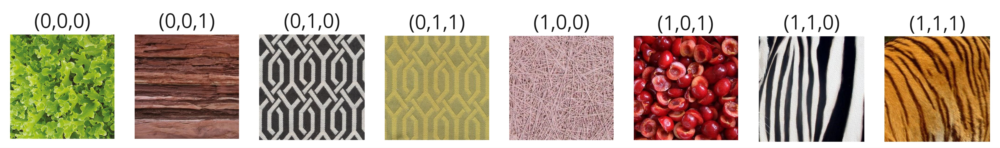

Neural cellular automata (NCA) have been proven effective in a variety of areas, with numerous biologically inspired applications. We believe that NCAs fit perfectly to the task of generating textures: they model global patterns from local interactions governed by uniform, consistent rules, enhancing structured, near-regular patterns. Therefore, this project aims to increase the usability of NCAs in texture synthesis by addressing a shortcoming in current NCA architectures for texture generation: the necessity for one trained NCA per texture. Thus we train one NCA to evolve into multiple textures provided by example. Our solution relies on providing texture information in the seed, as a genomically-coded internal signal that the NCA interprets and yield the expected texture. Particularly, we define a few hidden channels of the cell's state to be genome channels.
Employing this architecture leads to an extended range of behaviours exhibited by our NCA. Generating multiple textures from one NCA allows us to test interpolation behaviours between learned examples and grafting techniques, while enhancing the well-known NCA property of regeneration, further emphasizing the editability of generated textures and the possibility of multiple textures joining and coexisting in one automaton. We address questions relating the extent to which our NCA uses the genomic information and proper loss function selection based on the properties of selected example images.
Below we visualize the evolution of a neural cellular automata (NCA), with 4270 parameters, trained on 8 different textures. The size of the generated textures is 256 x 256, whereas the examples fed during training are of resolution 128 x 128.

We observe the evolution of a NCA trained on 4 different textures.
We observe the evolution of a NCA trained on 4 similar textures. It is more unstable, after a large number of steps the genome information seems to be lost and the textures converge towards other genomes.
Behaviour before adjusting the training methodology to enhance regeneration.
Behaviour after adjusting the methodology.
Given the added genome channels, we can nou interpolate between textures known by the same automaton:


Grafting allows us to generate multiple textures through the same instance. Cells are initialized with wanted genomes, they evolve and interact.
Given the diversity of the generated textures in our experiments, a question arises: does the automaton know how to preserve and generate based solely on the perception stage and vicinity's properties, or does it also maintain the genome information to gather stability?


A NCA pass is illustrated above and consists of 2 major steps:
The Sliced Wasserstein Loss is calculated on feature maps extracted from a VGG16 pass for the example and generated image.

It is calculated between each feature maps by projecting the feature vectors onto multiple random directions and calculating the 1D OT distances between the obtained sorted scalars using MSE.